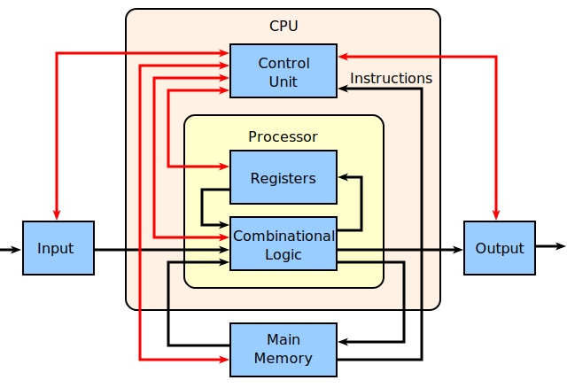

La arquitectura de computadoras es la descripción de la estructura de un sistema computacional hecho de componentes. A veces puede ser una descripción de alto nivel que ignora los detalles de la implementación. En un nivel más detallado, la descripción puede incluir el diseño de la arquitectura del conjunto de instrucciones, el diseño de la microarquitectura, el diseño lógico y la implementación.
La arquitectura de computadoras se encarga de equilibrar el rendimiento, la eficiencia, el costo y la confiabilidad de un sistema informático. El caso de la arquitectura del conjunto de instrucciones se puede utilizar para ilustrar el equilibrio de estos factores en competencia. Los conjuntos de instrucciones más complejos permiten a los programadores escribir programas más eficientes en el espacio, ya que una sola instrucción puede codificar alguna abstracción de nivel superior (como la instrucción Loop x86). Sin embargo, las instrucciones más largas y complejas requieren más tiempo para que el procesador las decodifique y pueden ser más costosas de implementar de manera efectiva. La mayor complejidad de un gran conjunto de instrucciones también crea más espacio para la falta de confiabilidad cuando las instrucciones interactúan de manera inesperada.
La implementación implica el diseño de circuitos integrados, el empaquetado, la alimentación y la refrigeración. La optimización del diseño requiere familiaridad con los compiladores, los sistemas operativos, el diseño lógico y el empaquetado.